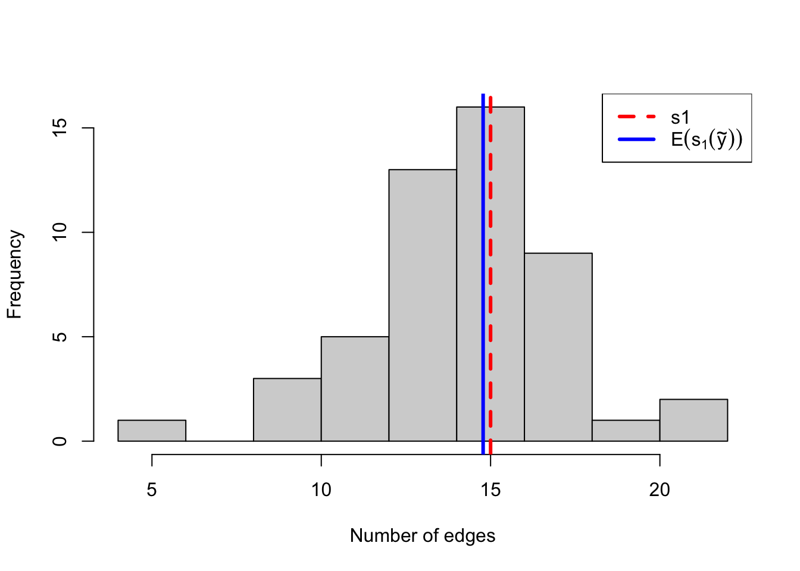
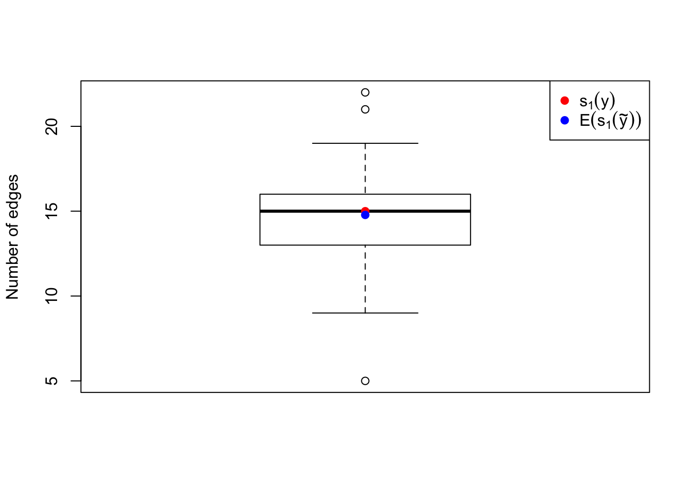
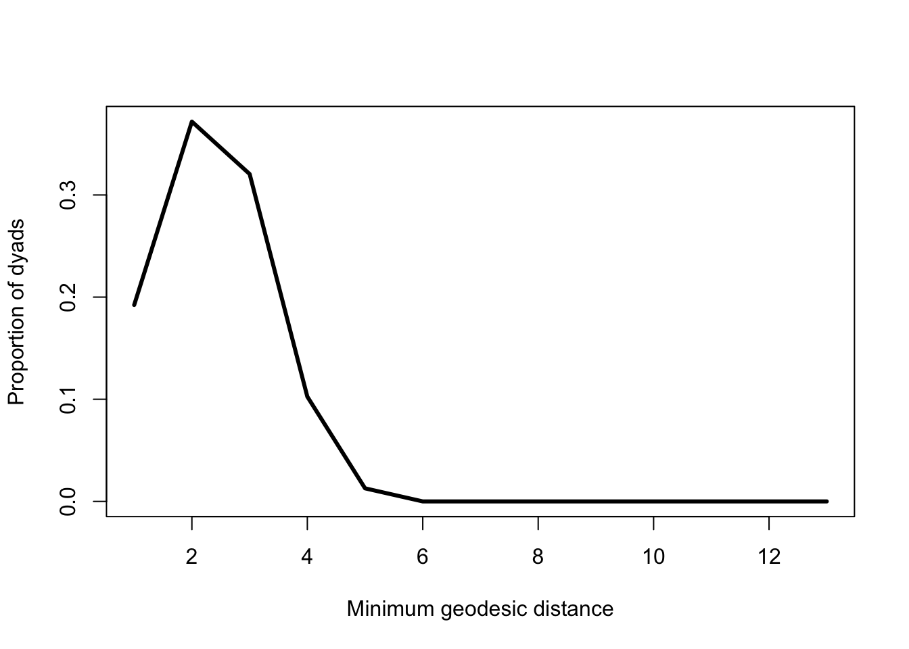

Chapter 3 The random graph model
3.1 Networks as random graphs
We describe as the observed network the network data the researcher has collected and is interested in modeling. The observed network is regarded as one realization from a set of possible networks with similar important features, that is, as the outcome of some (unknown) stochastic process. In other words, the observed network is seen as one particular pattern of edges out of a large set of possible patterns.
Network data are generally represented by graphs of nodes (actors) and edges (relations). Social network analysis focuses on the relations among actors, and not individual actors and their attributes. In fact, for a given model, the node set is regarded as fixed. The range of possible networks, and their probability of occurrence under the model, is represented by a probability distribution on the set of all possible graphs with this number of nodes.
Once we have defined a probability distribution on the set of all graphs with a fixed number of nodes, we can also draw graphs at random from the distribution according to their assigned probabilities, and we can compare the sampled graphs to the observed one on any other characteristic of interest. If the model is a good one for the data, then the sampled graphs will resemble the observed one in many different respects.
3.1.1 Notation
- \(N\) number of nodes (fixed).
- \(D\) number of dyads in a \(N\)-node network (fixed).
- \(Y\) random \(N \times N\) adjacency matrix \(\in \mathcal{Y}\) where:
- \(Y_{ij} = 0\), if \(i\) and \(j\) are not connected;
- \(Y_{ij} = 1\), if \(i\) and \(j\) are connected;
- \(Y_{ii} = 0\), (self-loops are not allowed).
- \(y\) realisation of \(Y\) (observed adjacency matrix).
\(Y\) may be directed so \(Y_{ij}\) and \(Y_{ji}\) are two different random variables observed between the same pair of nodes.
Let’s create a random network on 13 nodes using the network function and have a look at the corresponding adjacency matrix:
library(statnet)
set.seed(11)
N <- 13
y <- network(N, directed = FALSE)
y[,]## 1 2 3 4 5 6 7 8 9 10 11 12 13
## 1 0 0 1 1 1 0 0 0 1 0 0 0 1
## 2 0 0 0 1 0 0 0 0 0 1 0 0 0
## 3 1 0 0 0 0 0 0 0 0 0 1 0 0
## 4 1 1 0 0 1 0 1 1 0 1 0 1 0
## 5 1 0 0 1 0 0 0 0 0 0 0 0 0
## 6 0 0 0 0 0 0 0 0 0 0 0 1 0
## 7 0 0 0 1 0 0 0 1 0 0 0 0 0
## 8 0 0 0 1 0 0 1 0 0 0 0 0 0
## 9 1 0 0 0 0 0 0 0 0 0 0 0 0
## 10 0 1 0 1 0 0 0 0 0 0 0 0 0
## 11 0 0 1 0 0 0 0 0 0 0 0 0 0
## 12 0 0 0 1 0 1 0 0 0 0 0 0 0
## 13 1 0 0 0 0 0 0 0 0 0 0 0 03.1.2 Visualisation
Let’s have a look at the network graph:
set.seed(11)
plot(y, vertex.cex = 2, vertex.col = "skyblue", label = seq(1, N))
3.1.3 Number of dyads
In an undirected graph, we have: \[ D = \frac{N^2 - N}{2} \]
D <- (N^2 - N) / 2
D## [1] 783.1.4 Number of edges
The number of edges is the sum of the 1’s in the observed adjacency matrix \(y\): \[ E = s_1(y) = \sum_{i < j} y_{ij}. \]
For an undirected adjacency matrix (like \(y\)), we have:
s1 <- sum(y[,]) / 2; s1## [1] 15or using the summary function included in the ergm package:
s1 <- summary(y ~ edges); s1## edges
## 15The summary function can be used to get general information about the network:
summary(y)## Network attributes:
## vertices = 13
## directed = FALSE
## hyper = FALSE
## loops = FALSE
## multiple = FALSE
## bipartite = FALSE
## total edges = 15
## missing edges = 0
## non-missing edges = 15
## density = 0.1923077
##
## Vertex attributes:
## vertex.names:
## character valued attribute
## 13 valid vertex names
##
## No edge attributes
##
## Network adjacency matrix:
## 1 2 3 4 5 6 7 8 9 10 11 12 13
## 1 0 0 1 1 1 0 0 0 1 0 0 0 1
## 2 0 0 0 1 0 0 0 0 0 1 0 0 0
## 3 1 0 0 0 0 0 0 0 0 0 1 0 0
## 4 1 1 0 0 1 0 1 1 0 1 0 1 0
## 5 1 0 0 1 0 0 0 0 0 0 0 0 0
## 6 0 0 0 0 0 0 0 0 0 0 0 1 0
## 7 0 0 0 1 0 0 0 1 0 0 0 0 0
## 8 0 0 0 1 0 0 1 0 0 0 0 0 0
## 9 1 0 0 0 0 0 0 0 0 0 0 0 0
## 10 0 1 0 1 0 0 0 0 0 0 0 0 0
## 11 0 0 1 0 0 0 0 0 0 0 0 0 0
## 12 0 0 0 1 0 1 0 0 0 0 0 0 0
## 13 1 0 0 0 0 0 0 0 0 0 0 0 03.2 Random graph model
Definition - The likelihood of a random graph model represents the probability distribution of a network graph \(y\) given a parameter \(\eta\): \[ p(y\ |\ \eta) = \prod_{i < j} \eta^{y_{ij}}(1-\eta)^{1-y_{ij}} = \eta^{s_1(y)}(1 - \eta)^{D - s_1(y)} \] where \(0 \le \eta \le 1\).
3.2.1 Estimation
To estimate \(\eta\) we can just calculate the density of the network, i.e., the proportion of edges: \[ \hat{\eta} = \frac{s_1(y)}{D}: \]
eta <- s1 / D; eta## edges
## 0.1923077this is equivalent to:
eta <- summary(y ~ density); eta## density
## 0.19230773.2.2 Natural parametrisation
Now consider \(\theta = \mathrm{logit}(\eta)\): \[ \eta = \frac{\exp \{ \theta \} }{1 + \exp \{ \theta \}}, \] then the random graph model can be written as an exponential family distribution: \[ p(y\ |\ \theta) = \prod_{i < j} \frac{\exp \left\lbrace \theta \right\rbrace^{y_{ij}}} {1 + \exp \left\lbrace \theta \right\rbrace} = \frac{\exp\left\lbrace \theta^t\ s_1(y) \right\rbrace} {c(\theta)} \] where \(-\infty < \theta < +\infty\) and \[ c(\theta) = \sum_{y' \in \mathcal{Y}} \exp\left\lbrace \theta^t\ s_1(y') \right\rbrace \] is a normalising constant.
Let’s get an estimate of \(\theta\) using the ergm function:
theta <- ergm(y ~ edges); theta$coef## Evaluating log-likelihood at the estimate.## edges
## -1.435085Let’s check whether \(\dfrac{\exp \{ \hat{\theta} \} }{1 + \exp \{ \hat{\theta} \}} = \hat{\eta}:\)
round(exp(theta$coef) / (1 + exp(theta$coef)), 4) == round(eta, 4)## edges
## TRUE3.2.3 Parameter interpretation
The parameter estimate \(\theta\) provide insights about the contribution of the edge statistic \(s_1(y)\) to edge formation.
When \(\theta = 0\), probability of observing an edge between two nodes \(i\) and \(j\) is: \[\begin{equation*} \Pr(Y_{ij} = 1\ |\ \theta = 0) = \frac{\exp \{ 0 \} }{ 1 + \exp \{ 0 \} } = \eta = 0.5. \end{equation*}\]where \(Y_{ij}\) is an node pair in \(Y\) and \(Y_{-ij}\) is the rest of the network.
A negative (positive) value of \(\theta\) means that the probability of observing a network with a higher number of edges is lower (higher) than the probability of observing a network whose probability of observing an edge between two nodes is \(0.5\): \[\Pr(Y_{ij} = 1\ |\ \theta < 0) = \eta < 0.5,\] \[\Pr(Y_{ij} = 1\ |\ \theta > 0) = \eta > 0.5.\]
Let’s take a look at the summary of model fit using the summary function:
summary(theta)##
## ==========================
## Summary of model fit
## ==========================
##
## Formula: y ~ edges
##
## Iterations: 5 out of 20
##
## Monte Carlo MLE Results:
## Estimate Std. Error MCMC % p-value
## edges -1.4351 0.2873 0 <1e-04 ***
## ---
## Signif. codes: 0 '***' 0.001 '**' 0.01 '*' 0.05 '.' 0.1 ' ' 1
##
## Null Deviance: 108.13 on 78 degrees of freedom
## Residual Deviance: 76.37 on 77 degrees of freedom
##
## AIC: 78.37 BIC: 80.73 (Smaller is better.)In this example, \(\theta \approx -1.4351\) corresponding to \(\eta \approx 0.1923\). So we can conclude that the network is sparse as the probability to observe an edge connecting any pair of nodes is about 20%.
3.3 Network simulation
The estimate \(\hat{\eta}\) is the probability of observing an edge between any pair of nodes in our \(N\)-node network.
To simulate from the estimated random graph model we can simply simulate \(N \times N - N\) Bernoulli trials and arrange them into a \(N \times N\) adjacency matrix:
set.seed(11)
adj.sim <- matrix(rbinom(N * N, size = 1, prob = eta), N, N)
diag(adj.sim) <- 0
y.sim <- network(adj.sim, directed = FALSE)Alternatevely, you can use the simulate function (more info: ?simulate.ergm) included in the ergm package to simulate a realisation from the estimated model using \(\hat{\theta}\):
set.seed(11)
y.sim.1 <- simulate(network(N, directed = FALSE) ~ edges,
coef = theta$coef)Let’s have a look at the two network graphs simulated:
set.seed(11)
par(mfrow = c(1, 2))
plot(y.sim, vertex.cex = 2, vertex.col = 'skyblue', main = 'y.sim')
plot(y.sim.1, vertex.cex = 2, vertex.col = 'skyblue', main = 'y.sim.1')
Now, let’s simulate 50 networks from the estimated random graph model:
set.seed(11)
y.sim.1_50 <- simulate(network(N, directed = FALSE) ~ edges,
coef = theta$coef,
statsonly = TRUE, # returns only the values of the network statistics
nsim = 50) # number of network simulated
summary(y.sim.1_50)## edges
## Min. : 5.00
## 1st Qu.:13.25
## Median :15.00
## Mean :14.78
## 3rd Qu.:16.00
## Max. :22.003.3.1 Histogram
We can plot a histogram to visualise the distribution of the number of edges of the 50 simulated networks:
hist(y.sim.1_50, xlab = "Number of edges", main = "", col = "lightgray")
abline(v = s1, col = "red", lwd = 3, lty = 2)
abline(v = mean(y.sim.1_50), col = "blue", lwd = 3, lty = 1)
legend("topright",
c(expression(s1), expression(E(s[1](tilde(y))))),
lty = c(2, 1),
col = c("red", "blue"), lwd = 3)
3.3.2 Boxplot
Alternatively, we can plot a boxplot:
boxplot(y.sim.1_50, ylab = "Number of edges")
points(s1, col = "red", pch = 19)
points(mean(y.sim.1_50), col = "blue", pch = 19)
legend("topright",
c(expression(s[1](y)), expression(E(s[1](tilde(y))))),
pch = c(19, 19),
col = c("red", "blue"))
3.4 Network statistics
Due to the complexity of networks, it is necessary to reduce the information to describe essential properties of the network.
Usually this is done via network statistics a series of counts of sub-graph configurations, catching the relevant information.
A network statistic:
should describe essential properties of the network. A certain property should be described in a compact and handy form. We would like to forget the exact structure of the underlying graph and concentrate on a restricted set of statistics.
should differentiate between certain classes of networks. A quite common question in network analysis regards the type of the measured network and how to generate models for it. This requires the decision about whether a generated network is similar to another one. In many situations, this may be done by identifying several statistics, which are invariant in the class of networks of interest.
may be useful in algorithms and applications. Some network statistics may be used for algorithms or calculations on the graph. Or they might indicate which graph elements have certain properties regarding the application.
3.4.1 Degree distribution
The degree distribution for a network consists of the values \[\frac{D_0}{N}, \frac{D_1}{N}, \dots, \frac{D_{N-1}}{N}\] where \(\frac{D_{k}}{N}\) equals the proportion of nodes that share edges with exactly \(k\) other nodes.
Deg.dist <- summary(y ~ degree(0:(N-1)))
plot(Deg.dist / N, type = "l", lwd = 3,
xlab = "Degree",
ylab = "Proportion of nodes")
3.4.2 Edgewise shared partners distribution
The edgewise shared partner distribution consists of the values \[\frac{EP_0}{s_1(y)}, \frac{EP_1}{s_1(y)} \dots, \frac{EP_{N−2}}{s_1(y)}\] where \(s_1(y)\) denotes the number of edges and \(EP_k\) equals the number of edges whose endpoints both share edges with exactly \(k\) other nodes.
Ep.dist <- summary(y ~ esp(0:(N - 1)))
plot(Ep.dist / s1, type = "l", lwd = 3,
xlab = "Edgewise shared partners",
ylab = "Proportion of edges")
3.4.3 Geodesic distance distribution
The geodesic distance distribution consists of the relative frequencies of the possible values of geodesic distance between two nodes, where the geodesic distance between two nodes equals the length of the shortest path joining those two nodes (or infinity if there is no such path).
For instance, because two nodes are at geodesic distance 1 if and only if they are connected by an edge, and because there are \(\binom{N}{2}\) possible pairs of nodes, the first value of the geodesic distance distribution equals \(\frac{s_1(y)}{\binom{N}{2}}\). The last value, the fraction of dyads with infinite geodesics, is also called the fraction “unreachable” (NR).
Geo.dist <- ergm.geodistdist(y)
plot(Geo.dist / D, type = "l", lwd = 3,
xlab = "Minimum geodesic distance",
ylab = "Proportion of dyads")
3.5 Goodness of fit diagnostics
A pragmatic way to examine the fit of the data to the estimated model the output obtained is to implement a goodness-of-fit procedure.
To do this, a set of network graphs are simulated from the maximum likelihood estimate of the parameter \(\hat{\theta}\) and compared to the observed graph in terms of high-level network statistics which are not modelled explicitly.
We can use the gof function:
gof.theta <- gof(theta ~ degree + esp + distance,
control.gof.formula(nsim = 100)) # number of simulated networks3.5.1 Graphical diagnostics
par(mfrow = c(1, 3))
plot(gof.theta, main = '')
3.5.2 Summaries
summary(gof.theta)##
## Goodness-of-fit for degree
##
## obs min mean max MC p-value
## 0 0 0 1.00 4 0.74
## 1 4 0 2.86 9 0.58
## 2 7 1 3.87 8 0.08
## 3 0 0 3.15 7 0.08
## 4 0 0 1.45 6 0.54
## 5 1 0 0.50 3 0.76
## 6 0 0 0.15 2 1.00
## 7 1 0 0.01 1 0.02
## 8 0 0 0.01 1 1.00
##
## Goodness-of-fit for edgewise shared partner
##
## obs min mean max MC p-value
## esp0 6 4 10.42 18 0.12
## esp1 9 0 3.71 13 0.14
## esp2 0 0 0.50 7 1.00
## esp3 0 0 0.07 1 1.00
##
## Goodness-of-fit for minimum geodesic distance
##
## obs min mean max MC p-value
## 1 15 9 14.70 21 0.94
## 2 29 6 21.04 39 0.32
## 3 25 1 15.19 25 0.02
## 4 8 0 6.92 17 0.90
## 5 1 0 2.40 9 1.00
## 6 0 0 0.77 8 1.00
## 7 0 0 0.16 3 1.00
## 8 0 0 0.01 1 1.00
## Inf 0 0 16.81 58 0.54